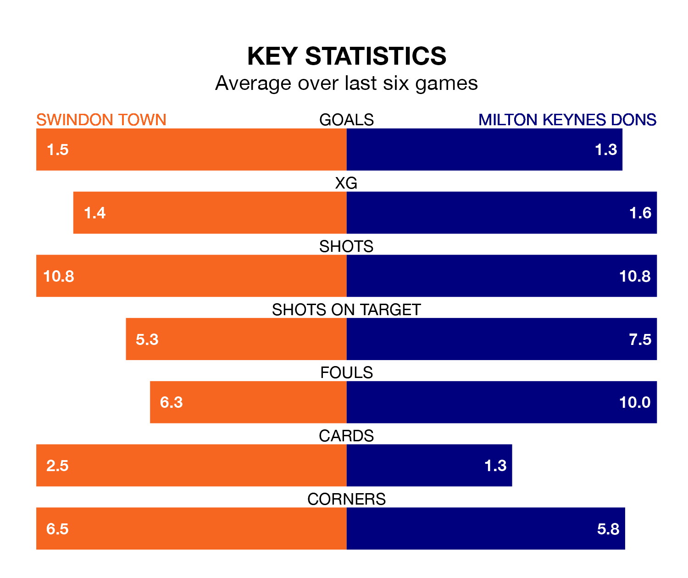

Swindon Town host Milton Keynes Dons on Saturday at the County Ground in EFL League Two.
In their last league match, on Tuesday, Swindon drew with Gillingham 2-2 away, with goals from Harry McKirdy and Sean McGurk.
Milton Keynes lost, 4-0 away at Bradford City.
With 56 goals in 32 games so far this season, Swindon are scoring more than average in the league with 1.8 goals per game. But they are conceding more than average too, letting in 59 goals at a rate of 1.8 per game.
Milton Keynes are also above average scorers, with 1.6 goals per game, compared to a league average of 1.5. They have conceded 1.4 goals per game.
In the last 10 years, Swindon and Milton Keynes have played each other on 10 occasions. Swindon won one of them, Milton Keynes seven, and they drew twice.
On average, the Robins scored 1.2 goals and the Dons 2.6 in those matches.
Their last meeting was on October 28, when Milton Keynes won 3-2 at home.
Dons are sixth in the table after 31 games, of which they have won 15 and drawn six, earning 51 points.
Town are 11 places behind the Dons in 17th, with 10 wins and nine draws putting them on 39 points.
In Jake Young, the Robins have one of the league's most on-form strikers so far this season. He has notched 16 goals in 29 appearances, to sit fifth in the scoring charts.
His goal rate of one every 132 minutes is quicker than that of Max Dean, the visitors' top scorer with a goal every 170 minutes, and a total of nine goals in 22 games.
The home side are in disappointing form in EFL League Two, with one win and three draws from their last six games.
With three wins and three losses over that period, Milton Keynes's form is better – they have taken nine points from 18, compared to Swindon's six.
Updated: 12:06 (UTC), 15/02/24